Linear probes are a simple way to classify internal states of language models. They are trained either on a per-token basis or on a compressed representation of latent vectors from multiple tokens. This reprsentation can be gathered with mean pooling, or the last token could be used.
We propose attention probes, a way to avoid pooling by collecting hidden states with an attention layer. The pseudocode is as follows:
def attention_probe(
hidden_states: Float[Tensor, "seq_len d_model"],
query_proj: Float[Tensor, "d_model n_heads"],
value_proj: Float[Tensor, "d_model n_heads n_outputs"],
position_weights: Float[Tensor, "n_heads"],
) -> Float[Tensor, "n_outputs"]:
# seq_len, n_heads
attention_logits = hidden_states @ query_proj
# position embedding. this is a version of ALiBi with a learned position bias.
# it is relative to the last or first token.
position_bias = position_weights[None, :] * torch.arange(seq_len)[:, None]
attention_logits += position_bias
# seq_len, n_heads
attention_weights = softmax(attention_logits, dim=-2)
# seq_len, n_heads, n_outputs
values = hidden_states @ value_proj # won't actually work in torch
# n_outputs
output = (attention_weights[..., None] * values).sum(dim=-(-2, -3))
return output
As you can see, the attention probe has multiple heads. Each head finds a single attention logit for a token instead of a logit for each pair of tokens. We add a learnable position bias and take softmax to find attention probabilities. Again, there is only one probability per token and head. This can be thought of as cross-attention with one learned query token.
We then perform the value projection. Because the output dimension of a probe is often very small, we do not need to factorize the projection into value and output as MHA does. There is a version of the output for each token and head, and we sum them up after weighting by attention probabilities to get the final output.
Related work
McKenzie et al. (2025) proposed an architecture for probes that is equivalent to the attention probe formulation from above, but with only one head and no position bias. They find that it has performance greater than or equal to other types of probes, including last-token and mean probes, and that last-token probes perform worse than any aggregation method. We use a different set of datasets, so our results are not directly comparable. Our selection of optimizers and hyperparameters is also different.
Kantamneni et al. (2025) is the earliest appearance of attention probes known to us. The attention probes take a secondary role in the paper. They are also single-headed. When combined with last-token probes via the "quiver" method, it brings down the win rate of SAE probes.
Datasets
We based our activation gathering code on Gallifant et al. (2025) (MOSAIC, GitHub). We only use Gemma 2B and Gemma 2 2B for collecting activations and choose layers 6-12-17 and 5-12-19 respectively, like in the original repo. We used all datasets mentioned in the code:
* Anthropic/election_questions
* AIM-Harvard/reject_prompts
* jackhhao/jailbreak-classification
* willcb/massive-intent
* willcb/massive-scenario
* legacy-datasets/banking77
* SetFit/tweet_eval_stance_abortion
* LabHC/bias_in_bios
* canrager/amazon_reviews_mcauley_1and5
* codeparrot/github-code
* fancyzhx/ag_news
We additionally included some datasets from Gurnee et al. (2023) -- specifically, all probing datasets from the Dropbox archive with only one label per sequence.
Training procedure
We trained the probes in the following way:
1. Initialize value_proj randomly and query_proj with a zero matrix.
2. Split dataset into 80% training and 20% test sets.
3. Sweep 4 values of weight_decay (0.0, 0.001, 0.01, 0.1) on 5 cross-validation folds.
4. Train for 500 steps (attention probes) or 2000 steps (last-token and mean probes) with AdamW optimizer (for attention probes) or LBFGS (for last-token and mean probes).
5. Evaluate on the test set.
Results
On the MOSAIC datasets, mean probes outperform last-token probes, as in Costa et al. (2025). However, on the Neurons-In-A-Haystack (NiAH) datasets, the opposite is true.
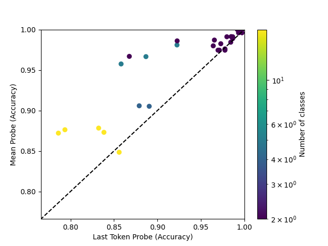
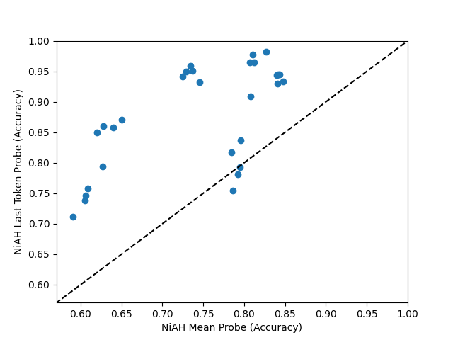
Mean probes do better with the LBFGS optimizer compared to AdamW:
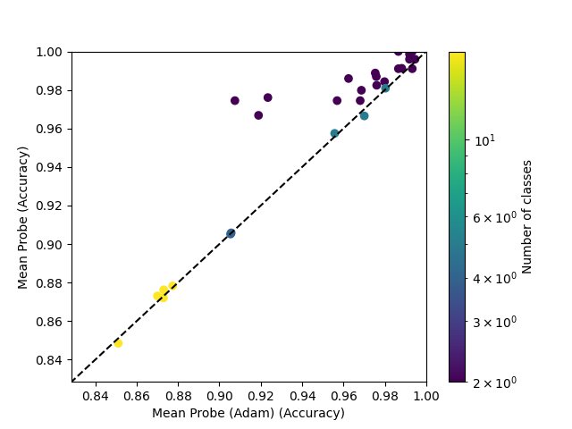
The 8-head attention probe, trained with AdamW, mostly outperforms mean probes, and always outpeforms mean probes trained with AdamW.
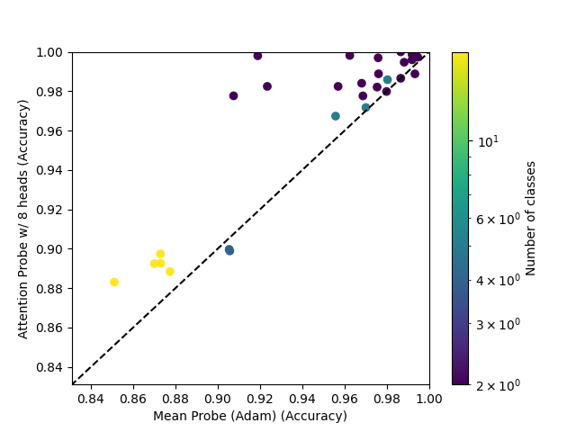
The single-head attention probe attains mixed results, even when compared to an AdamW-trained mean probe.
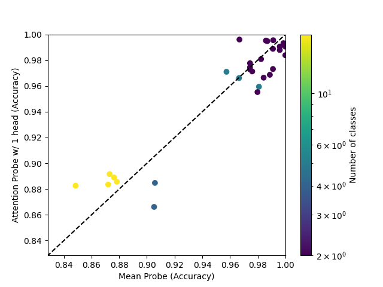
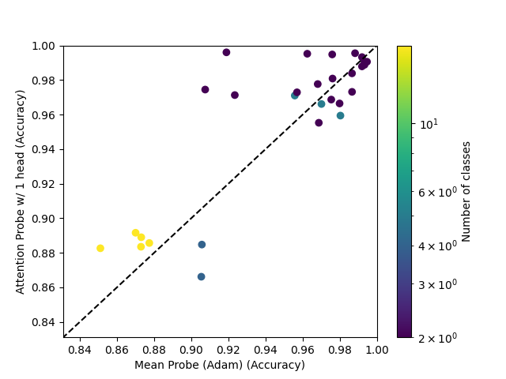
Going from 1 head to 2 heads seems to have a similar effect to going from 2 heads to 8 heads.
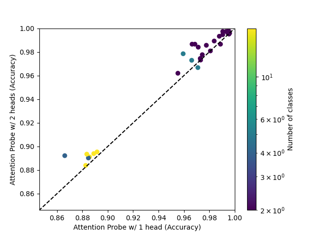
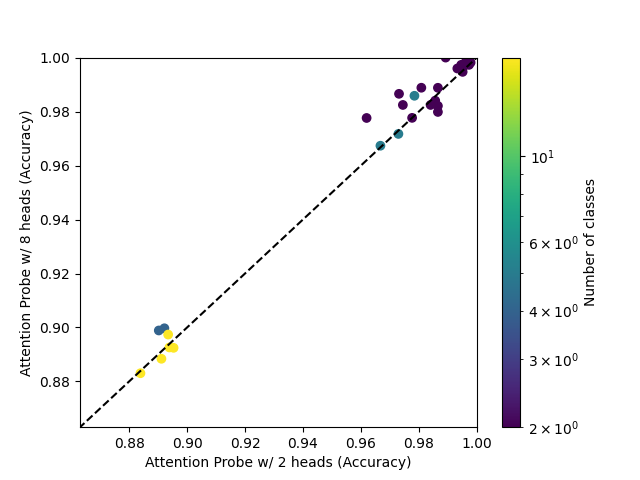
On Neurons In A Haystack, attention probes do not seem clearly better than last-token probes, and the performance is noisy. This is despite last-token probes being a special case of attention probes with position weights set to infinity.
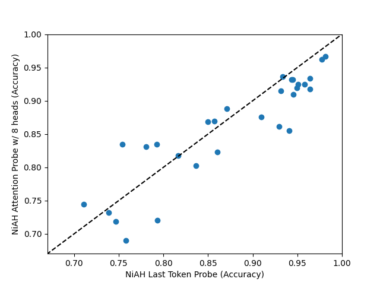
Even a single-head attention probe is an improvement over mean probes on Neurons In A Haystack.
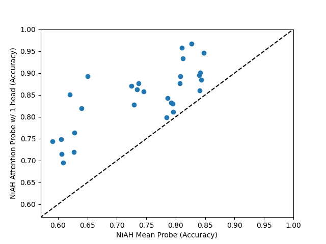
Entropy
We can look at the weights of attention probes to see how they spread their attention across the input. For each sequence and head, we may compute the entropy of the post-softmax attention weights. On its own, the entropy is not very informative, so we compare it to the entropy of a uniform distribution with the same length. We average the per-sequence per-head entropies over the test set.
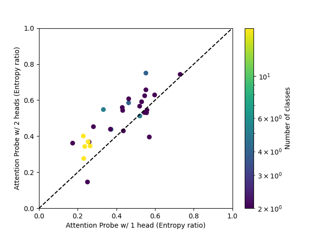
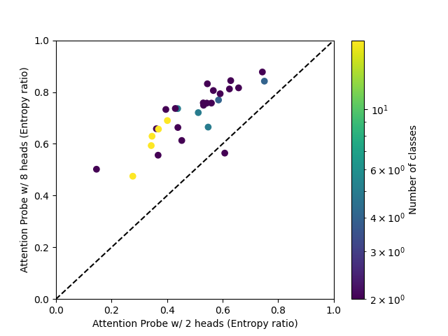
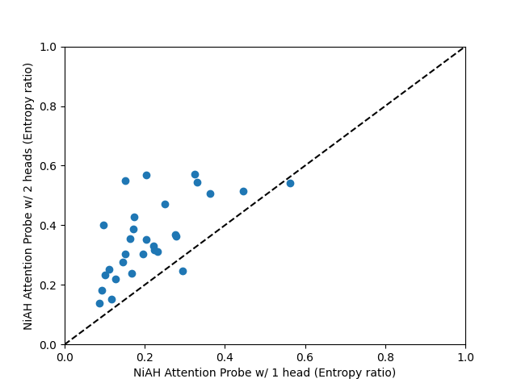
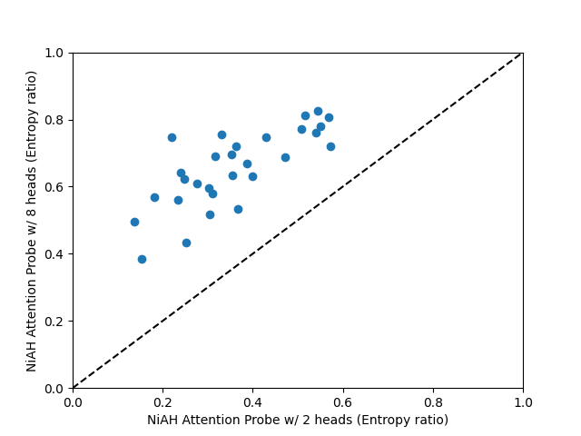
It can be seen that entropy generally increases with the number of heads, and very much depends on the dataset.
Maximum activating examples
We provide maximum activating examples for each dataset and single-head attention probe. The attention patterns are sometimes illuminating - for example, for the bias in bios dataset, the probe attends to gender-related words.
Conclusion
Attention probes are mostly comparable to mean- or last-token probes, depending on which is better for a given dataset. They benefit from a larger number of heads, but increasing the number of heads leads to higher attention weight entropy. LBFGS improves performance of mean and last-token probes.
Using attention probes
We share the training code at https://github.com/EleutherAI/attention-probes, installable via pip install git+https://github.com/EleutherAI/attention-probes. Attention probes can be created and trained using the library:
# Example usage
# Overfit an attention probe on a small dataset
from attention_probe import AttentionProbe, AttentionProbeTrainConfig, TrainingData, train_probe, evaluate_probe, compute_metrics
import torch
dataset_size = 1024
seq_len = 16
hidden_dim = 256
num_classes = 2
n_heads = 2
data = TrainingData(
x=torch.randn(dataset_size, seq_len, hidden_dim),
y=torch.randint(0, num_classes, (dataset_size,)),
mask=torch.ones(dataset_size, seq_len),
position=torch.arange(seq_len),
n_classes=num_classes,
class_mapping={0: "class 0", 1: "class 1"},
)
config = AttentionProbeTrainConfig(
n_heads=n_heads,
hidden_dim=hidden_dim,
)
probe, _loss = train_probe(data, config, device="cuda" if torch.cuda.is_available() else "cpu")
probs = evaluate_probe(probe, data, config)
metrics = compute_metrics(probs, data)
print(metrics)